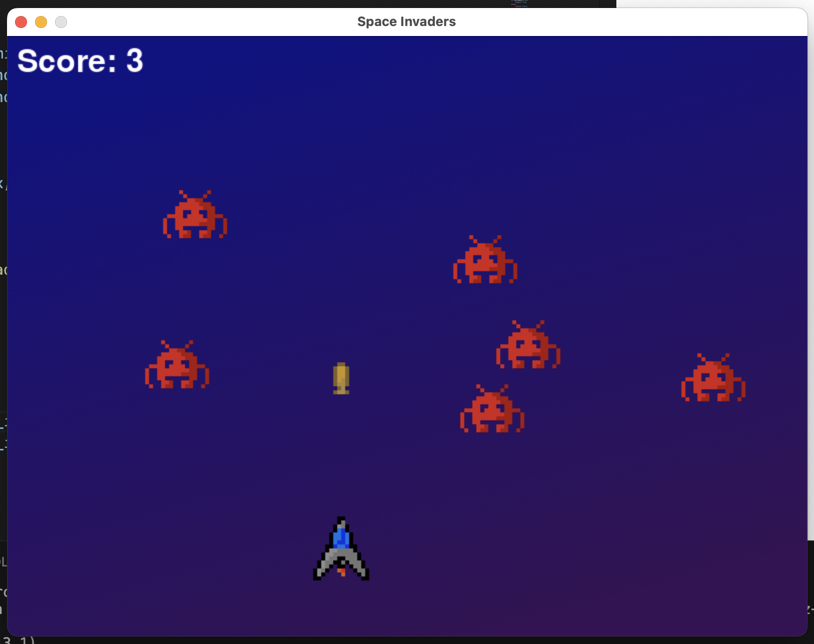
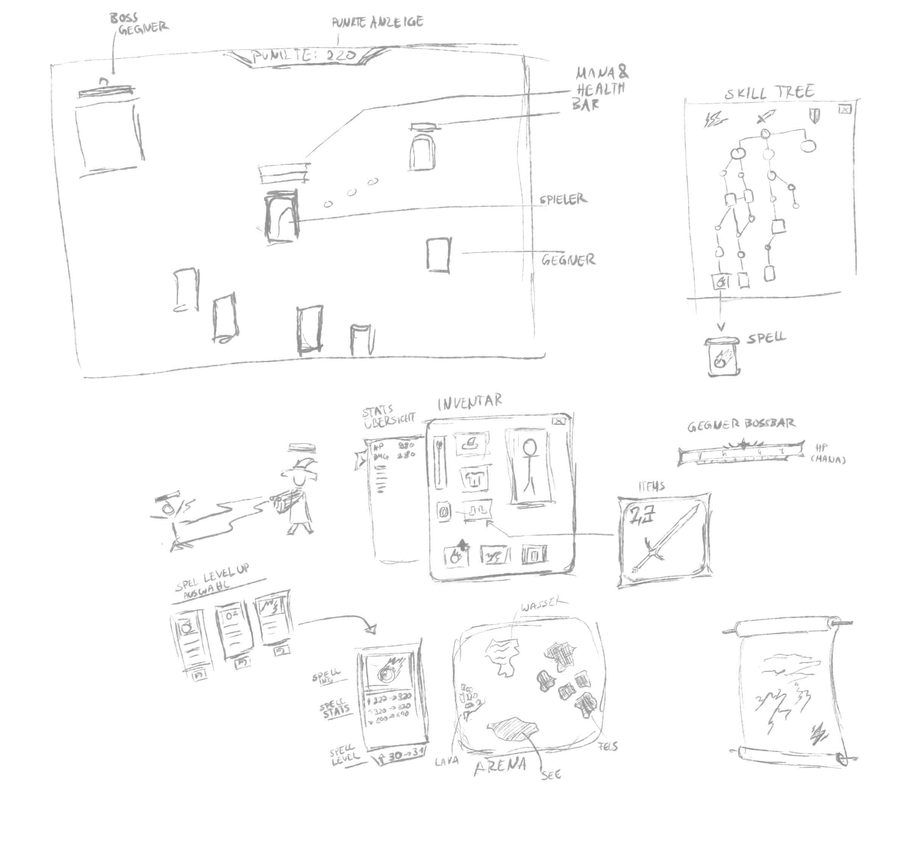
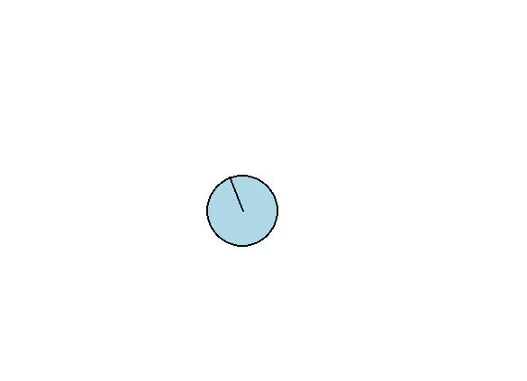
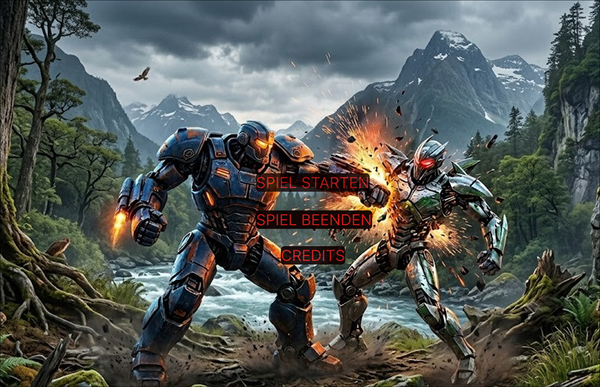
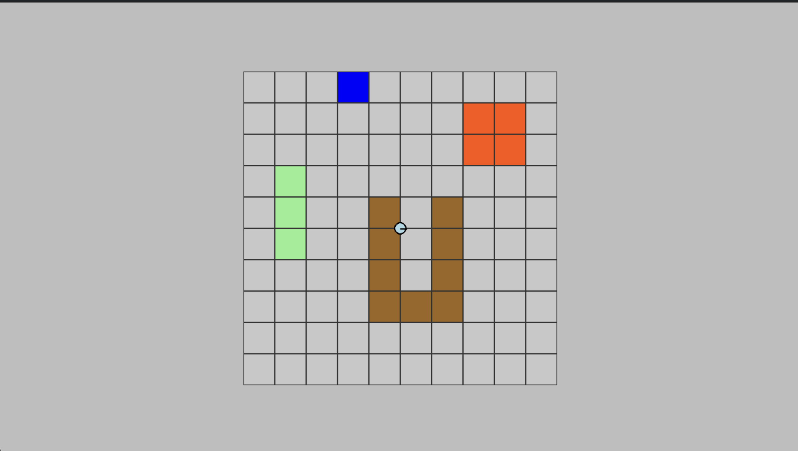

Wir haben damit begonnen dieses Repo zu erstellen.
Dann haben wir einen basic Ruff test mit KI erstellt und auf das Repo geladen.
als nächstes haben wir ein basic space invaders game erstellt und damit ein wenig herumexperimentiert.

danach haben wir eine GitHub IO Seite erstellt.
Probleme die bei uns aufgetreten sind hingen vor allem mit dem setup für das environment zusammen oder hatten ihre Wurzel in relativen Pfaden und wie Python diese interpretiert.
Wir haben mit einem Brainstorming begonnen, welche Ideen wir zur Umsetzung unseres Games haben. Da wir uns noch nicht ganz sicher über die endgültige Umsetzung waren, haben wir beschlossen mit einer top down 2-D Karte zu beginnen, da wir diese für jede unserer Ideen benötigen. Genauso, wie ein basic WASD Player-movement.

BackForester hat damit begonnen eine basic Arena zu implementieren und hat zusätzlich eine allgemeine Tiles-Klasse definiert.
Als nächstes hat Pottwalle zusätzlich drei neue Arten von Tiles zu dem vorher schon existenten Wasser hinzugefügt und die Tile Klasse in ein eigenes Modul ausgelagert (die Tile-Eigenschaften werden aktuell noch nicht angewandt).
Danach hat bidD007 die basic-Roboter Klasse implementiert, die einen Roboter als Kreis auf der Arena darstellt und dessen Eigenschaften wie Koordinaten, Blickrichtung und Größe hält.


500Block hat die Map Konstruktion ausgelagert sowie eine settingsdatei erstellt, danach basic WASD movement implementiert mithilfe der BasicRobo Klasse.
